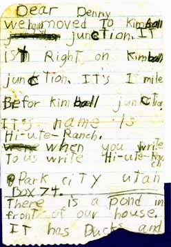
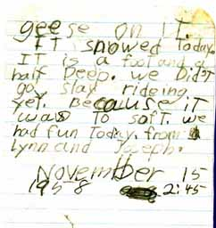

1958 letter describing the Ranch

Dear Denny
We have moved to Kimball junction. It is't Right on Kimball junction. It's 1 mile Befor Kimball junction. It's name is Hi-ute-Ranch. When you write to us write Hi-ute-Ranch Park City Utah Box 74.
There is a pond in front of our house. It has Ducks and geese on it.
It snowed Today. It is a foot and a half deep. We Did't go slay rideing yet. Because it was to soft. We had fun today. from Lynn and Joseph.
November 15 1958 2:45